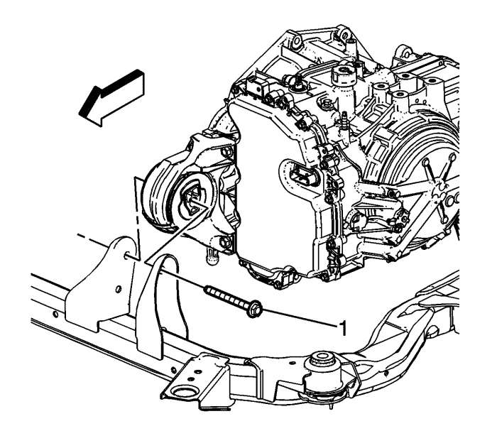
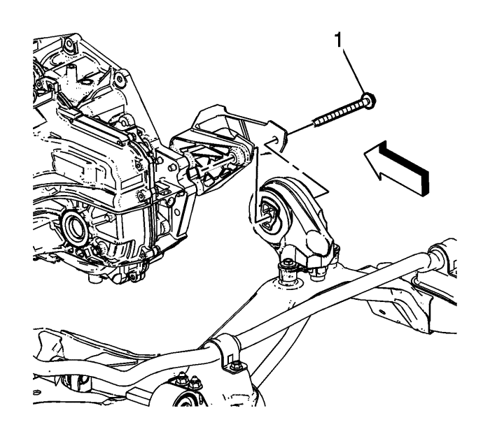
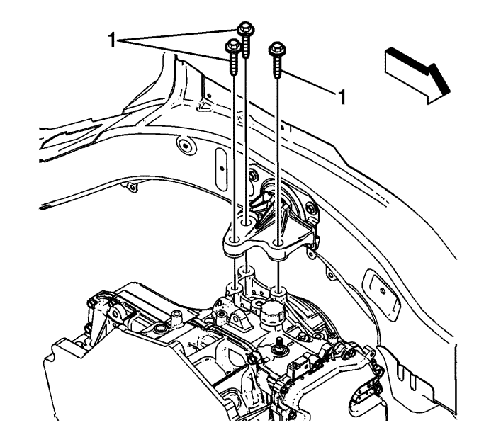
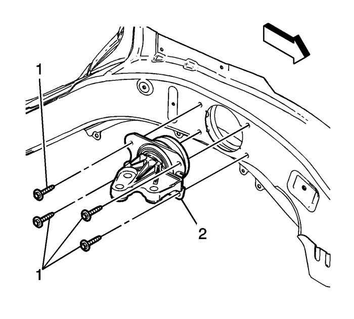

Captiva
Sustitución del alojamiento de la transmisión - Lateral izquierdo
Procedimiento de desmontaje
Desmonte la bandeja de la batería. Consultar
Sustitución de la bandeja de la batería
.
Apoye el motor y la caja de cambios.
Desmonte el neumático y la rueda izquierdos. Consultar
Desmontaje y montaje de los neumáticos y las ruedas
.
Elevar el vehículo y soportarlo de manera segura. Consultar
Elevación del vehículo con un gato
.
Desmontar la pantalla de protección del motor. Consultar
Sustitución del protector del motor
.

Retire el tornillo del alojamiento de la transmisión frontal al marco (1).

Retire el tornillo del alojamiento de la transmisión trasera a su soporte (1).
Bajar el vehículo.

Retire los tornillos del alojamiento de la transmisión de la izquierda a la transmisión (1).

Retire los tornillos del alojamiento de la transmisión de la izquierda al carril del marco (1).
Baje la transmisión lo suficiente para poder proporcionar el espacio necesario para al alojamiento de la transmisión izquierda.
Desmonte el alojamiento izquierdo de la caja de cambios (2).
Procedimiento de montaje
Instale el montaje izquierdo de la transmisión (2).
Precaución:
Consulte
Precaución con las fijaciones
en la sección Prólogo
Coloque los tornillos del alojamiento de la transmisión izquierda al carril del marco (1) y apriételos a
27 N·m (20 lb ft)
.
Eleve la transmisión hasta que se ponga en contacto con el alojamiento de la transmisión izquierda.
Coloque los tornillos del alojamiento de la transmisión izquierda a la transmisión (1) y apriételos a
57 N·m (42 lb ft)
.
Elevar el vehículo
Coloque los tornillos del alojamiento de la transmisión trasera al soporte del alojamiento de la misma (1) y apriételos a
110 N·m (81 lb ft)
.
Monte el tornillo del alojamiento de la transmisión delantera al marco (1) y apriete a
100 N·m (74 lb ft)
.
Monte la pantalla de protección del motor. Consultar
Sustitución del protector del motor
.
Bajar el vehículo.
Monte el neumático y la rueda izquierdos. Consultar
Desmontaje y montaje de los neumáticos y las ruedas
.
Desmonte el apoyo del motor y la caja de cambios.
Monte la bandeja de la batería. Consultar
Sustitución de la bandeja de la batería
.
© Copyright Chevrolet Europe. All rights reserved